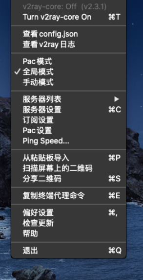

由于本人并没有iOS设备，但是帮助同学为其iOS设备安装过iOS的科学上网工具，所以关于iOS的教程无法实际演示，仅能以文字说明，我会尽可能表述清楚，也会贴上一些别人写的可访问的教程。Mac我将使用虚拟机进行演示，使用的版本较旧，但操作方法相似。如果您购买了M1版本的mac恕我无能为力，但M1版本的mac可安装iOS端的的app您可以想办法安装。翻墙的一些原理还有免费的节点白嫖我在Windows/android科学上网教程中有说明就不再赘述了。
iOS
iOS端的科学上网工具也有不少，但是大家一般使用的就是Shadowrocket，其兼容各种翻墙协议，界面简洁备受好评。早期版本完全免费，后期需要3美元购买，当然后期的版本更加人性化，比如可以粘贴梯子链接导入梯子，添加订阅链接等等。当然其实在其他系统上这都是必备功能，不过iOS这么高端的系统不收费就给你当然不足以显示其地位。
第一种方法
具体步骤
第一步 美区apple ID获取
翻墙的客户端在中国大陆地区的apple store是不能上架的，你需要美区或者香港的apple ID才可以在商店中下载。
第二步 shadow rocket下载
这个在系统和apple store等登录了美区ID然后商店搜索下载即可（如果你购买了别人的ID,或者使用了网络上分享的请勿登录iCloud，有可能导致手机被锁变砖），旧版免费，新版需要3美元购买（不知道涨价了没有）
第三步 使用
导入节点使用即可，具体功能设置参考Windows/Android。注意旧版需要手动输入节点的账号密码，端口等信息，你可以在电脑上的科学上网工具中查看这些信息。
美区ID可以自己注册也可以网上找，淘宝卖服务，淘宝店的服务一般会提供给你一个已经购买了该软件的ID供你直接下载，具体可以和店家详谈。
我在这里给大家提供一些别的教程获取美区ID
美区ID注册：https://appledi.com/appleid/
免费美区ID分享（ID可能失效）：https://appledi.com/
安装教程：https://appledi.com/Shadowrocket/
第二种方法
下面简绍另一种教程下载iOS端shadow rocket的安装包api文件到电脑，用爱思助手安装。
安装包可以自己百度或者到GitHub搜索下载（GitHub应该还会有使用方法）。
这是我找到的安装包https://github.com/v2net/ios/releases/
下载第一个文件即可
爱思助手安装软件的方法：https://www.i4.cn/news_detail_3339.html
在线安装网站（自行尝试能否使用）：https://1.v2w.org/ios/
一个提供安装服务的网站注册账号后即可使用提供在线安装服务，但是已经被墙，目前不清楚是否还提供服务以及是否依然免费我会在文末附上一款傻瓜型免费的VPN可以翻墙尝试，由于我没有iOS设备也没有尝试这个网站是否还会提供服务，但是翻墙后可以访问是肯定的 网址：https://sstz.me/login
Mac端
Mac端我常用的是v2ray U和clash x(建议使用这两款ss/ssr协议已经很容易被墙了，尤其现在机场一般会提供clash配置文件给你很方便。)
V2ray U:” https://github.com/yanue/V2rayU/releases/tag/3.0.3
Clash x: https://github.com/yichengchen/clashX/releases/tag/1.50.1
下载第一个.dmg文件即可下载后双击打开安装
将软件图标拖动到蓝色文件夹中就安装成功了，用过mac的朋友应该都会。
在访达中打开软件上面会出现图标小猫咪是clash，另一个是v2ray.
点击图标出现相应的菜单
V2ray U

从粘贴版导入：复制你找到的节点点击即可导入节点
订阅设置：点击可设置你从机场获得的订阅地址以及更新订阅
第二行的Turn v2ray-core on：点击后变为off表示开启VPN翻墙服务
全局，pac 流量分配模式详见之前的Windows教程
Clash x
配置：选择配置文件，以及添加更新配置
选择只要点击对应配置文件名字，添加点击托管配置——管理
控制台：唤出主界面
设为系统代理：开启翻墙
允许来自区域网的连接：为同一局域网环境的设备提供翻墙。（如果你有不在使用的旧电脑，或者路由器支持以及配置软路由可以下载相应系统的翻墙工具打开此选项为你全屋设备提供访问国际互联网的服务，该功能主流翻墙软件都有）
最后为大家提供一个免费的，我本人在用的VPN软件支持全平台下载安装，提供免费付费节点（免费就够了），白天空闲时可以看油管1080p,晚高峰可以看但画质一般，直播估计不行，但可以作为备用梯子以备不时之需。同时他们的节点是原生节点可以解决注册spotify报错提示不可以使用代理的问题。
迷雾通网址（镜像网站）：https://rentry.co/getmwt
备用（镜像更新）：https://github.com/geph-official/geph4/wiki/%E8%BF%B7%E9%9B%BE%E9%80%9A%EF%BC%88%E5%85%8D%E7%BF%BB%E5%A2%99%E9%95%9C%E5%83%8F%EF%BC%89
那么你成功了吗？